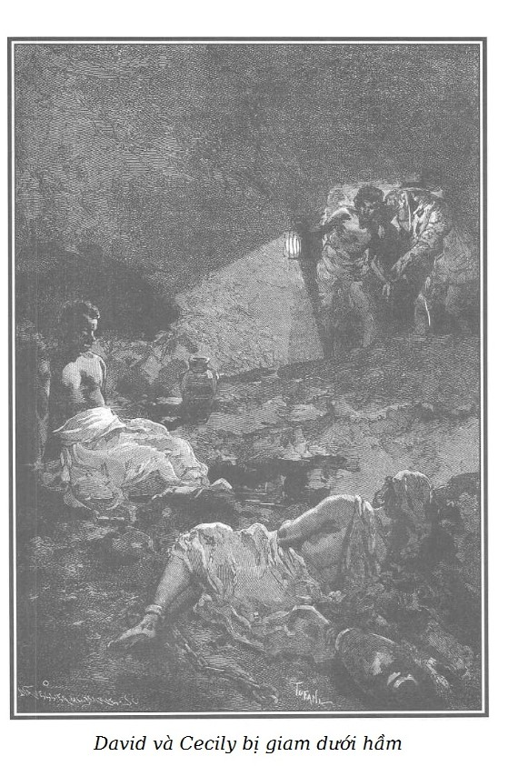

CHUYỆN DAVID VÀ CECILY
Murph kể:
– Lão Willis, một chủ nô giàu có ở Florida nhận thấy trong số những nô lệ da đen có một người trẻ tuổi tên là David, phục vụ trạm y tế của đồn điền thông minh đặc biệt, anh ta có lòng trắc ẩn vô hạn, quan tâm sâu sắc đến các bệnh nhân khốn khổ mà mình hết lòng chạy chữa dưới sự chỉ đạo của các thầy thuốc, anh ta lại còn có năng khiếu đặc biệt trong việc nghiên cứu các cây thuốc dùng để chữa bệnh và dù rằng không được học hành gì mấy, anh ta cũng đã sưu tầm và xếp loại được một tập thực vật chí của địa phương vùng đồn điền và các vùng phụ cận. Đồn điền của lão Willis ở cạnh biên, cách thành phố gần nhất mười lăm, hai mươi dặm, vả chăng những ông thầy thuốc đã chẳng giỏi giang gì lại còn ít chịu đi chữa chạy cho con bệnh do đường sá quá xa xôi, giao thông kém thuận tiện. Để giảm bớt điều bất tiện như vậy ở một xứ sở hay xảy ra dịch bệnh, và để lúc nào cũng sẵn có thầy thuốc thành thạo, chủ đồn điền nảy ra ý nghĩ cử David sang Pháp học phẫu thuật và y học. Rất vui sướng về đề nghị ấy, chàng trai da đen trẻ tuổi đi Paris; chủ đồn điền chịu mọi phí tổn cho việc học tập, sau tám năm cố gắng phi thường, David tốt nghiệp tiến sĩ Y khoa cấp ưu tú, trở về Mỹ, đem kiến thức của mình phục vụ chủ cũ.
– Nhưng David đúng ra có thể tự coi như đã được tự do, trên thực tế thì đương nhiên là vậy khi đặt chân lên nước Pháp kia mà!
– Nhưng David lại là người trung thực hiếm thấy, anh ta đã hứa với lão Willis rằng sẽ quay trở về, anh ta trở về thật. Như vậy, có thể nói rằng anh ta không coi trình độ của mình là do tự thân vận động, mà là do tiền bạc của chủ mới có được. Sau nữa, anh ta hy vọng có thể làm dịu bớt những nỗi đau khổ về tinh thần và thể xác cho các bạn nô lệ của mình trước đây. Anh ta mong mỏi sẽ trở thành không chỉ là bác sĩ mà còn là người nâng đỡ, người bảo vệ họ trước chủ đồn điền nữa.
– Phải có lòng trung hậu bẩm sinh hiếm thấy và lòng ưu ái thánh thiện đối với người đồng chủng, anh ta mới có thể quay về với chủ nô sau tám năm lưu trú ở Paris, giữa những thanh niên dân chủ nhất châu Âu như thế.
– Do tính cách đó… ta hãy đánh giá con người. Thế là về đến Florida, nói thực, anh ta được ông chủ Willis đối xử vị nể, hậu hĩnh, ăn cùng bàn, ở cùng nhà. Hơn nữa, tên thực dân ấy vốn vừa ngốc nghếch, hung bạo, lại dâm dục, độc đoán như mọi kẻ da trắng sinh ra ở thuộc địa, tưởng rằng trả công cho David sáu trăm franc đã là rộng rãi lắm rồi. Sau đó vài tháng, một trận dịch sốt chấy rận kinh khủng lan ra trong đồn điền. Lão Willis mắc bệnh nhưng chóng qua khỏi nhờ sự chạy chữa của David. Trong số ba mươi người da đen ốm nặng chỉ có hai người chết. Lão Willis phấn khởi trước thành tích của David, tăng lương cho anh ta gấp đôi, tức là một nghìn hai trăm franc, người bác sĩ da đen này tự cho mình là người sung sướng nhất đời, anh em đồng chủng xem anh ta như Thượng đế của họ. Tuy gặp rất nhiều khó khăn, anh ta đã cải thiện được ít nhiều đời sống của họ, anh ta hy vọng sẽ làm tốt hơn nữa sau này. Trong khi chờ đợi, anh ta thuyết giáo, an ủi những người khốn khổ ấy, anh ta khuyến dụ họ chịu đựng, anh ta nói với họ về Chúa. Người chăm lo sinh linh, da đen cũng như da trắng, anh ta nói đến một thế giới khác không có chủ và nô lệ mà chỉ có những người công bằng chính trực và những kẻ hung ác; đến một cuộc đời, cuộc đời vĩnh cửu, ở đó con người không phải là gia súc, là vật sở hữu của kẻ khác, ở đó những nạn nhân nơi hạ giới này lại cầu nguyện cho những kẻ đã hành hạ họ. Tôi sẽ nói với ông làm sao nhỉ! Với những người khốn khổ kia, khác với mọi người bình thường, họ đón chờ cái chết từng ngày trong niềm vui cay đắng. Với những người khốn khổ ấy, vốn chỉ biết có sống mà không hy vọng, David dạy họ biết hy vọng đến tự do, xiềng xích đối với họ sẽ dường như bớt nặng, lao động của họ bớt cực nhọc. David là thần tượng của họ. Một năm trôi qua như vậy. Ở đồn điền ấy, trong số những nữ nô đẹp nhất có một cô gái lai mười lăm tuổi tên là Cecily. Lão Willis đã có một ý nghĩ ngông cuồng kiểu bạo chúa phương Đông đối với cô gái ấy. Lần đầu tiên trong đời lão, lão bị từ chối, bị chống cự kịch liệt. Cecily đã yêu… cô ta yêu David vì trong nạn đại dịch vừa qua anh ta đã săn sóc, cứu sống cô ta rất tận tâm và đáng phục; sau này, tình yêu đã đến, tình yêu trong trắng nhất ấy đã thay thế cho lòng biết ơn. David có tính cách quá tế nhị để phô bày hạnh phúc của mình trước ngày anh ta có thể cưới Cecily; anh ta đợi cô ta đủ mười sáu tuổi. Lão Willis không rõ mối tình giữa hai người, đã thô bạo và ngang nhiên chiếm đoạt cô gái lai xinh đẹp này; cô gái khóc sướt mướt đến mách với David những mưu toan xấu xa khiến cô ta phải cố sống cố chết chống cự mới thoát được, chàng trai da đen an ủi cô ta và ngay lập tức xin lão Willis cho phép cưới cô ta làm vợ.
– Quái thật! Ông Murph thân mến ạ, tôi không dám đoán câu trả lời của tên bạo chúa kiểu Mỹ ấy! Lão từ chối chứ?
– Lão từ chối. Lão nói, lão thích con bé, cả đời lão, lão chưa hề bị nữ nô lệ chê chối, lão muốn và lão phải được thỏa mãn. David cứ việc chọn một con đàn bà khác hoặc một con nhân ngãi khác theo sở thích. Trong đồn điền có đến mười cô gái da đen lai và nửa lai, cũng đẹp không kém Cecily. David nói đến tình yêu của mình và Cecily. Tên chủ đồn điền nhún vai. David nằn nì, nhưng vô ích. Tên da trắng được sinh ra ở thuộc địa này lại còn trâng tráo trả lời: “Ông chủ mà chịu nhượng bộ nô lệ tức là nêu gương xấu.” Gương xấu ấy lão không thể cho phép mà thỏa mãn ý thích thất thường của David được. Chàng trai vẫn năn nỉ, khiến lão chủ sốt ruột. David xấu hổ và không biết tự hạ mình nhiều hơn nữa, đã kiên quyết nhắc lại những công trạng của mình, anh ta đã không vụ lợi để mà bằng lòng hưởng một số tiền công ít ỏi như thế. Lão Willis căm giận, trả lời một cách khinh miệt là anh ta đã được đối xử tốt hơn một nghìn lần so với một tên nô lệ. Trước câu nói đó, David không thể nén giận. Đây là lần đầu tiên anh ta phát biểu như một người đã được giác ngộ về quyền lợi của mình sau tám năm lưu trú bên Pháp. Lão Willis điên tiết lên và đối xử với anh ta như với một nô lệ dám nổi loạn, dọa xiềng xích anh. David đáp lại gay gắt và đốp chát. Hai giờ sau, anh ta bị trói chặt vào cọc, bị roi da quật tơi bời, rách da nát thịt; trong lúc đó, trước mắt anh ta, Cecily bị lôi vào phòng trong của lão chủ đồn điền.
– Lão chủ đồn điền đối xử như thế thì quả xuẩn ngốc và ghê tởm. Đó là sự phi lý trong tàn bạo, trước đây thì lão mới cần người ta, chung quy là thế thôi!
– Cần lắm chứ, đến nỗi ngay ngày hôm ấy, do nổi cơn nóng giận, lại quen thói nốc rượu say bí tỉ mỗi buổi chiều, tên súc sinh tàn ác ấy bị một cơn sốt viêm nhiễm rất nguy hiểm, các triệu chứng xuất hiện cực kỳ nhanh chóng, đặc trưng cho những loại bệnh như thế. Hắn sốt nằm liệt giường. Hắn cấp tốc cho người đi mời bác sĩ nhưng ông này chỉ có thể đến đồn điền được sau ba mươi sáu giờ.
– Biến cố đó như là do trời định! Tình trạng nguy kịch của lão thật đáng kiếp!
– Bệnh tiến triển nhanh và rất đáng sợ. Chỉ David mới có thể cứu được lão chủ đồn điền; nhưng Willis đa nghi như mọi tên gian ác, lão nghi ngờ người bác sĩ da đen, sẽ nhân cơ hội này mà đầu độc lão khi cho lão uống thuốc, để trả thù… vì sau khi đánh đập anh ta bằng roi vọt, lão còn nhốt anh ta vào hầm giam. Sau cùng, hoảng sợ vì bệnh càng lúc càng trầm trọng, kiệt quệ vì đau đớn, nghĩ rằng đằng nào thì cũng chết nhưng ít ra thì lão cũng còn có một cơ may là trông chờ vào lòng độ lượng của người nô lệ; sau nhiều phen đắn đo, lưỡng lự, Willis đành phải ra lệnh tháo xiềng cho David.
– Và David đã cứu sống lão chủ đồn điền chứ?
– Suốt năm ngày đêm liên tiếp, David đã chăm sóc Willis như cha mình, đấu tranh với căn bệnh từng bước một với một trí tuệ, một sự thành thạo đáng phục. Rốt cuộc anh ta đã thắng, trước sự ngạc nhiên của người bác sĩ đã được mời và chỉ mãi tới ngày thứ hai mới kịp đến.
– Khi đã khỏi bệnh thì lão chủ đồn điền…
– Không muốn ê mặt, hàng ngày hàng giờ tự thấy quá thấp hèn trước lòng độ lượng cao cả, đáng kính phục của người nô lệ, lão chủ nô, bằng cách phải bỏ ra rất nhiều tiền của, đã giữ lại được ông bác sĩ ở lại làm việc trong đồn điền của lão; còn David thì lại bị tống xuống hầm giam như trước.
– Thế thì kinh tởm quá! Điều ấy tôi chẳng thấy lạ tí nào! David đối với lão là hiện thân của lòng hối hận!
– Lối xử sự dã man như vậy không phải chỉ là do thù oán và bởi ghen tuông mà ra; những người nô lệ da đen với tất cả lòng biết ơn nồng nhiệt với cứu tinh của họ về cả phần xác, về cả phần hồn, rất yêu mến David. Họ biết anh ta đã bỏ công chăm sóc lão chủ nô khi lão này lâm bệnh nặng. Vì thế, thoát ra khỏi sự u mê trì trệ do chế độ nô lệ lâu đời đã kìm hãm con người họ, những người khốn khổ ấy đã biểu lộ mạnh mẽ sự căm phẫn hay nói đúng hơn là nỗi đau xót ra mặt trước cảnh David bị roi quật nát người. Lão Willis tưởng như là đã khám phá được trong biểu hiện ấy mầm mống của một cuộc nổi loạn do ảnh hưởng của David gây ra ở những người nô lệ ấy. Lão chắc rằng David sau này sẽ cầm đầu họ để trả thù sự bạc bẽo bỉ ổi của lão, nỗi lo sợ phi lý ấy lại là một cớ nữa để lão chủ đồn điền càng ra sức đè nén và đối xử tàn tệ hơn với anh ta, khiến anh ta không còn có thể thực hiện được những ý đồ mà lão nghi ngờ anh ta đang ấp ủ.
– Về mặt khủng bố ác liệt thì xử sự như vậy có xuẩn ngốc một phần nhưng dù sao thì cũng vẫn là tàn bạo.
– Ít lâu sau những sự kiện ấy, chúng tôi đến đất Mỹ. Điện hạ đã thuê một con tàu Đan Mạch hai cột buồm ở cảng Saint-Thomas. Chúng tôi bí mật dò xét tất cả các đồn điền dọc duyên hải mà không để lộ tung tích. Chúng tôi được Willis tiếp đón long trọng. Vào ngay buổi tối hôm sau ngày chúng tôi cập bến, sau tiệc rượu tiếp đãi, rượu vào lời ra, bởi tính khoác lác trơ trẽn, Willis kể lại cho chúng tôi nghe với nhiều lời cợt nhả thô bỉ, câu chuyện David và Cecily; chẳng là tôi quên không nói ông biết là lão cũng đã tống giam Cecily để trị tội cô ta vì đã dám chê lão từ đầu. Nghe câu chuyện ghê tởm ấy, Điện hạ cho rằng Willis nói khoác hoặc quá say. Lão ấy say thật nhưng quá khoe mẽ thì không! Để người ta tin lời mình, lão chủ đồn điền rời bàn tiệc, ra lệnh cho một nô lệ lấy đèn và dẫn chúng tôi đến hầm giam David.
– Thế rồi sao?

.– Trong đời tôi, chưa bao giờ tôi thấy một cảnh tượng đau lòng đến thế! Hốc hác, gầy đét tận xương, gần như trần truồng, mình mẩy đầy thương tích, David và cô gái tội nghiệp kia bị xích ngang lưng, người ở đầu này, người ở đầu kia gian hầm, trông giống như hai bóng ma. Ánh đèn lờ mờ lại càng khiến cảnh đó thêm bi thảm. Thấy chúng tôi, David không nói một lời, mắt nhìn trừng trừng không chớp, dễ sợ. Lão chủ đồn điền nói với anh ta, cay độc, mỉa mai: “Thế nào, ông bác sĩ? Mày khỏe chứ! Mày giỏi giang thế kia mà! Có giỏi thì cứ trốn đi nào!”
Người da đen chỉ đáp lại bằng một lời và một cử chỉ cao cả tuyệt vời; anh ta thong thả đưa cánh tay phải lên cao, ngón trỏ chỉ trần hầm và chẳng thèm nhìn lão chủ đồn điền, với một giọng tôn nghiêm, anh ta nói: “Có Chúa!”
Và anh ta im lặng.
Tên chủ đồn điền cười sặc sụa: “Có Chúa à? Cứ kêu cứu với Người đi! Kêu với Chúa xem Chúa có đến giằng mày ra khỏi tay tao không? Tao thách cả Chúa đấy!”
Rồi tên Willis, mắt lơ láo vừa do giận dữ vừa do say rượu, giơ quả đấm lên trời, thốt ra những lời sàm báng: “Ừ đấy! Tao thách cả Chúa đấy! Chúa có giỏi cứ giải thoát bọn nô lệ của tao đi trước khi chúng nó chết! Nếu đếch làm được như vậy, tao sẽ bảo rằng chẳng có Chúa!”
– Đúng là một thằng xuẩn ngốc!
– Chúng tôi kinh tởm đến phát buồn nôn. Điện hạ không nói nửa lời. Chúng tôi ra khỏi hầm giam, cái hang ấy cũng như tòa nhà chính của đồn điền ở gần bờ biển. Chúng tôi quay về tàu, neo cách một quãng rất gần. Vào lúc một giờ sáng, khi mọi người ở đồn điền còn say sưa trong giấc ngủ, thì Điện hạ cùng tám người vũ trang đầy đủ, đến thẳng chỗ hầm giam, phá cửa hầm cứu thoát David và Cecily. Cả hai nạn nhân đều được chuyển xuống tàu mà không ai biết. Thế rồi Điện hạ và tôi đi đến nhà lão chủ đồn điền. Đến là kỳ cục! Bọn chúng hành hạ nô lệ nhưng lại không hề nghĩ đến đề phòng chút nào; chúng ngủ mà để ngỏ cả cửa lớn, cửa sổ. Chúng tôi vào phòng ngủ của lão chủ đồn điền dễ dàng, bên trong phòng có một cái đèn bầu bằng thủy tinh soi sáng. Lão này lồm cồm ngồi dậy, đầu óc còn mụ mẫm vì hơi rượu.
“Hồi tối, anh đã thách thức Chúa cứu thoát hai nô lệ của anh trước khi họ chết. Chúa đưa họ đi đấy.” Điện hạ nói vậy rồi lấy một cái túi tôi mang theo chứa khoảng hai mươi lăm nghìn franc vàng, Người vứt cái túi xuống giường của lão đó và nói: “Bồi thường cho anh giá tiền hai nô lệ này. Trước hành động bạo lực giết chóc của anh, ta đổi lại bằng bạo lực bảo toàn. Chúa sẽ phán xét.”
Thế là chúng tôi đi, để lão Willis sững sờ, đứng như trời trồng, cứ tưởng như đang trong giấc mơ. Ít phút sau, chúng tôi đã về đến tàu và kéo buồm rời bến!
– Ông Murph thân mến ạ, tôi nghĩ rằng Điện hạ bồi thường giá trị hai nô lệ cho kẻ khốn nạn ấy hơi quá rộng rãi đấy vì suy cho cùng thì David có thuộc quyền lão nữa đâu!
– Chúng tôi đã tính sơ sơ những phí tổn cho việc du học của David trong tám năm, sau đó còn tính gấp ba lần giá trị của anh ta và của Cecily coi như giá trị người nô lệ bình thường, cách cư xử của chúng tôi có thể vi phạm quyền lợi của người khác, biết thế chứ, nhưng nếu thấy tình trạng ghê sợ của những người khốn khổ ấy, sắp chết đến nơi; nếu nghe được những lời thách thức báng bổ Chúa từ miệng cái thằng vừa say mèm vừa hung bạo ấy; thì sẽ hiểu được vì sao mà Điện hạ muốn, như người đã nói trong hoàn cảnh đó, “thay trời hành đạo” một tí!
– Việc ấy có thể vừa bị công kích vừa được biện bạch như trong trường hợp trừng phạt tên Thầy Đồ, thưa ông đáng kính ạ. Vả chăng chuyện phiêu lưu đó cũng không gây ra hậu quả gì chứ?
– Không thể! Tàu hai cột buồm kéo cờ Đan Mạch, chuyến vi hành của Điện hạ giữ kín cực kỳ; người ta coi chúng tôi như những người Anh giàu có, chính cống. Thử hỏi thằng cha Willis, nếu dám thưa kiện thì lão sẽ kiện ở đâu và kiện ai mới được chứ? Về mặt này, lão chẳng đã nói còn gì, và người thầy thuốc của Điện hạ chẳng đã ký nhận trong một biên bản rằng cả hai người nô lệ ấy không thể sống quá tám ngày nữa trong căn hầm giam ghê sợ ấy. Phải tận tình, ra sức chăm sóc để cứu Cecily, chắc chắn là sắp chết đến nơi rồi. Từ đó David gắn bó với Điện hạ như là ngự y và hết đỗi trung thành với Người.
– Về đến châu Âu, chắc là David cưới Cecily?
– Cuộc hôn nhân ấy, tưởng là sẽ tốt đẹp kia đấy, được tổ chức ở cung điện của Điện hạ. Thế nhưng do một sự quay ngoắt kỳ lạ, một khi đã được hưởng cuộc sống không hề dám mơ tưởng đến, quên tất cả những gì mà David đã phải chịu đựng vì mình, hổ thẹn vì trong thế giới mới này, mà lại lấy một anh chồng da đen, ả Cecily, mê một thằng cha quá là sa đọa, đã phạm lỗi lầm lần đầu. Người ta có thể cho là thói đồi bại bẩm sinh của người con gái đáng thương này, từ trước đến giờ vẫn trong tiềm thức, chỉ chờ dịp có chất men nguy hiểm đó để mà phát triển với một mãnh lực ghê gớm. Ông biết những chuyện bê bối xảy ra sau đấy chứ gì! Sau hai năm cưới nhau, David vẫn tin tưởng và yêu thương vợ, bỗng biết tất cả những điều ô nhục. Như một tiếng sét, anh ta choàng tỉnh dậy trong phút mê man mù quáng.
– Người ta đồn là anh ta định giết vợ.
– Đúng thế, nhưng do Điện hạ ân cần khuyên nhủ, anh ta mới chịu bằng lòng để cho ả bị cầm cố suốt đời trong pháo đài, và chính Điện hạ đã ra lệnh cho mở cửa nhà ngục ấy ra, khiến cả ông cả tôi cũng phải ngạc nhiên, tôi không dám giấu ông điều đó, ông Nam tước ạ.
– Thật ra mà nói thì quyết định của Điện hạ càng khiến tôi phải ngạc nhiên hơn vì viên trấn thủ pháo đài đã nhiều lần báo cáo với Điện hạ để Người lưu ý cảnh giác rằng người đàn bà đó rất khó chế ngự, không tài nào xóa bỏ được tính cách táo bạo, chai sạn và thói hư tật xấu của ả được. Vậy mà Điện hạ vẫn cứ nhất quyết cố tình triệu ả đến đây. Với mục đích gì? Vì lý do gì nhỉ?
– Nam tước thân mến, đây là những điều mà tôi cũng không biết, chẳng khác gì ông. À, mà đã muộn rồi đấy. Điện hạ muốn rằng chuyến thư này phải được chuyển đi càng sớm tốt, đi Gerolstein đấy!
– Trước hai giờ sẽ lên đường. Vì vậy, ông Murph thân mến, tối nay như đã hẹn nhé!
– Tối nay à?
– Ơ, ông quên rồi sao? Tối nay có dạ hội khiêu vũ ở Đại sứ quán nước +++* và Điện hạ phải đến dự.
Ký hiệu để giấu tên tuổi, cấp bậc các nhân vật và tổ chức.
– Ừ nhỉ! Từ ngày vắng Đại tá Warner và Bá tước d’Harneim, tôi vẫn cứ quên rằng mình vừa là thị thần, vừa là sĩ quan tùy tùng của Người đấy!
– Nhưng còn về ông Bá tước và ông Đại tá thì bao giờ các ông ấy mới trở lại nhỉ? Sứ mệnh của họ liệu đã sắp xong chưa nhỉ?
– Ông biết đấy, Điện hạ muốn xa họ càng lâu càng tốt, để được tự do, rảnh rỗi. Còn về sứ mệnh mà Điện hạ trao cho họ là nhằm tống khứ họ một cách đàng hoàng, bằng cách điều họ, người thì đi Avignon, người thì đi Strasbourg; tôi sẽ rỉ tai thổ lộ cho ông biết, một ngày nào đó mà cả hai ta đều buồn tẻ; vì tôi sẽ đố cả những ai sầu đời nhất có thể nhịn được mà không cười phá lên, do không những vì những câu chuyện riêng ấy mà còn vì một vài đoạn trong các báo cáo mà các nhà quý tộc đáng kính ấy gửi về, trân trọng những sứ mệnh rởm mà họ được giao với một niềm tin tưởng nghiêm túc khó mà tin được.
– Thật tình tôi vẫn không hiểu lắm vì sao Điện hạ lại coi ông Đại tá và ông Bá tước là thân tín nhỉ?
– Tại sao à? Đại tá Warner chẳng phải là mẫu hình xứng đáng của giới quân nhân hay sao? Trong Liên bang Đức, có ai mà tầm vóc cao lớn hơn, râu ria tốt đẹp hơn, cốt cách quân sự hơn? Nhất là khi ông ta nai nịt mũ mãng cân đai bối tử lên ngựa cầm cương thì ai dám bảo là có… con vật nào oai phong lẫm liệt, tướng mạo đàng hoàng hơn được nữa?
– Đúng vậy, nhưng càng đẹp mã bao nhiêu thì lại càng kém thông minh bấy nhiêu thôi!
– Như thế này này, Điện hạ nói là nhờ có Đại tá, ông thành ra quen chịu đựng được những kẻ đần độn nhất thế giới. Trước mỗi phiên chầu tẻ nhạt, Người đóng chặt cửa lại ngồi một mình với Đại tá và sau đó thì đi ra hiên ngang, hoạt bát, sẵn sàng vượt mọi buồn phiền.
– Cũng như người lính La Mã ngày xưa ấy, trước khi phải hành quân quá sức thường lồng chân vào đôi dép đúc bằng chì để thấy mọi sự mệt mỏi khác trở nên nhẹ nhõm chẳng khác gì như khi cởi dép ra. Bây giờ thì tôi thấy Đại tá có ích thật! Thế còn Bá tước d’Harneim?
– Cũng rất có ích với Điện hạ! Không ngớt phải nghe rì rầm bên tai cái trống bỏi già, rỗng tuếch, sáng loáng và kêu loong boong ấy; thấy cái bong bóng xà phòng to tướng đầy những… cái không có gì ấy, Điện hạ càng thấy rõ rệt hơn nữa mọi phù hoa của phô trương vô bổ do tương phản, thường là ngắm nghía cái bong bóng thị thần vô ích và hào nhoáng ấy mà Điện hạ có những ý nghĩ nghiêm túc và dồi dào nhất.
– Vả chăng, công bằng mà nói, ông Murph thân mến ạ, thử hỏi có triều đình nào mà lại có, xin ông cứ tự nhiên, một mẫu thị thần nào hoàn chỉnh hơn được? Còn ai biết hơn ông d’Harneim những thể thức và tục lệ truyền thống của lễ tân? Ai mà biết đeo một cách trang trọng tấm huân chương tráng men vào cổ, chìa khóa vàng ở sau lưng oai vệ hơn ông ta được?
– Về việc ấy, Nam tước ạ, Điện hạ cho rằng cái lưng của một ông thị thần có một cốt cách thật đặc biệt. Người nói rằng nó có vẻ vừa nhẫn nhục vừa chống đối, trông đến là đáng thương hại. Vì, ôi đau khổ, chính là ở cái lưng của ông thị thần chói sáng lên dấu hiệu tượng trưng của chức trách và theo Điện hạ thì ông d’Harneim đáng kính ấy dường như lúc nào cũng toan giới thiệu mình bằng cách đi giật lùi để người ta thấy ngay được ông là nhân vật quan trọng.
– Thật ra, đề tài suy tư thường xuyên của Bá tước lại là vấn đề sau: Do trí tưởng tượng tai hại nào mà người ta lại bắt đeo chìa khóa vàng ở sau lưng? Vì cũng như người ta thường nói rất hợp lẽ, phải lòng và bực bội: “Quái quỷ thật, có ai mở cửa mà phải quay lưng lại không nhỉ? Thế mà…”
– Thưa Nam tước, có chuyến xe thư, có chuyến xe thư đấy! – Murph chỉ đồng hồ.
– Cái ông chết tiệt này làm tôi mải chuyện quá! Tại ông đấy nhé! Xin ông chuyển lời kính chào của tôi đến Điện hạ. – Nam tước vừa nói vừa chạy lại lấy mũ. Tối nay ta lại gặp nhau, ông Murph nhé!
– Thưa vâng, tối nay. Nam tước thân mến ạ! Muộn muộn một tí nhé! Tôi chắc rằng Điện hạ ngay ngày hôm nay sẽ đến thăm căn nhà đầy bí ẩn ở phố Temple.